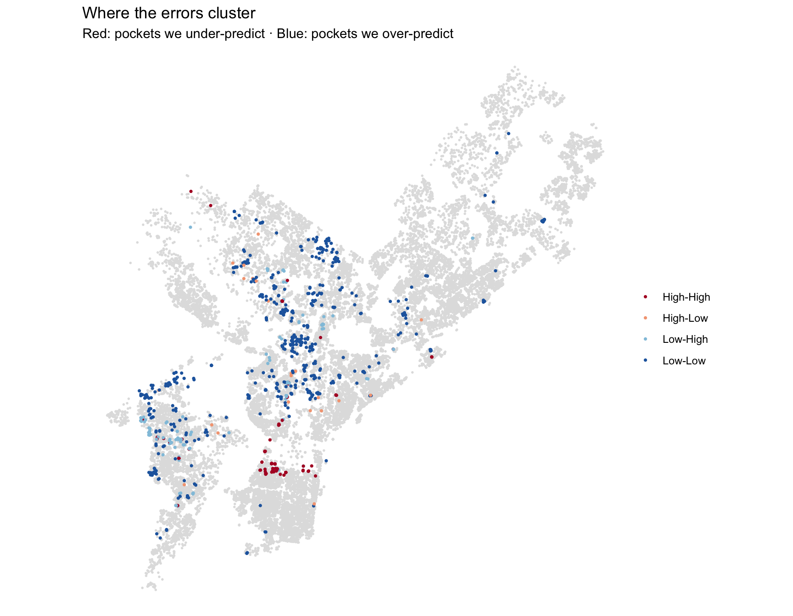

library(tidyverse)
library(sf)
library(nngeo)
library(spdep)
library(tidycensus)
options(scipen = 999)
carto_get <- function(sql) {
url <- paste0(
"https://phl.carto.com/api/v2/sql?format=GeoJSON&q=",
URLencode(sql, reserved = TRUE)
)
st_read(url, quiet = TRUE)
}
cv_pred <- function(formula, data, k = 10, seed = 5080) {
data <- st_drop_geometry(data)
set.seed(seed)
fold <- sample(rep(seq_len(k), length.out = nrow(data)))
predictions <- rep(NA_real_, nrow(data))
for (i in seq_len(k)) {
held_out <- fold == i
fit <- lm(formula, data = data[!held_out, ])
predictions[held_out] <- predict(fit, newdata = data[held_out, ])
}
predictions
}
cv_rmse <- function(formula, data) {
predicted <- cv_pred(formula, data)
observed <- model.response(model.frame(formula, st_drop_geometry(data)))
sqrt(mean((observed - predicted)^2))
}Week 8: Local Spatial Autocorrelation and Rental Pricing
LISA, spatial features, model errors, and the RealPage pricing discussion.
What We Covered
This week, we moved from asking whether prediction errors cluster across the city to asking where those clusters are. We used local Moran’s I to identify places where a house-price model underpredicts or overpredicts, then considered spatial features that might explain those errors.
The second part of class used RealPage and a rental-pricing exercise to examine who provides a model’s data, who acts on its predictions, and who bears the consequences.
From Global Moran’s I to LISA
Global Moran’s I produces one number for the whole dataset. It tells us whether similar values tend to occur near each other, given our definition of neighbors. It does not identify each location responsible for that pattern.
LISA stands for Local Indicators of Spatial Association. It is a family of local measures; local Moran’s I is the one used in this class. Local Moran’s I gives each observation its own statistic.
| Question | Measure |
|---|---|
| Do the model’s errors cluster overall? | Global Moran’s I |
| Where are the clusters and spatial outliers? | Local Moran’s I, combined with significance and quadrant labels |
For our house-price model:
\[ \text{residual} = \text{actual sale price} - \text{predicted sale price} \]
- A positive residual means the model underpredicted the price.
- A negative residual means the model overpredicted the price.
For example, if a house sold for $300,000 and the model predicted $200,000, the residual is +$100,000.
Who Counts as a Neighbor?
The computer needs an explicit rule for deciding which observations are neighbors. That rule becomes a spatial weights matrix.
For polygons, the lecture discussed two contiguity rules:
| Rule | What counts as a neighbor? |
|---|---|
| Queen contiguity | Polygons sharing an edge or a corner |
| Rook contiguity | Polygons sharing an edge; a corner alone is insufficient |
The names come from chess. Queen contiguity includes diagonal contact; rook contiguity is more restrictive. The choice depends on the relationship being studied.
For the house points in our exercise, we use the five nearest other houses. This is a different neighbor definition from polygon contiguity.
Row-standardized weights
With binary weights, a neighbor receives a weight of 1 and a non-neighbor receives 0. With row standardization, the weights for each observation sum to 1.
- One neighbor receives a weight of 1.
- Two neighbors each receive a weight of 0.5.
- Five neighbors each receive a weight of 0.2.
The weighted sum then represents a neighbors’ average. In spdep, style = "W" requests this row standardization.
The Five-House Example
The lecture returned to the five houses from the previous week. The residuals below are expressed in thousands of dollars.
The mean residual is:
\[ \bar{x} = \frac{100 + 80 + 20 - 50 - 70}{5} = 16 \]
Each deviation is the residual minus that mean:
\[ z_i = x_i - \bar{x} \]
| House | Residual | Deviation, \(z_i\) | Neighbors | Neighbors’ average deviation |
|---|---|---|---|---|
| A | 100 | 84 | B | 64 |
| B | 80 | 64 | A, C | 44 |
| C | 20 | 4 | B, D | −1 |
| D | −50 | −66 | C, E | −41 |
| E | −70 | −86 | D | −66 |
For B, the neighbors’ average deviation is (84 + 4) / 2 = 44. For C, it is (64 - 66) / 2 = -1. C’s neighbors are on opposite sides of the mean, so their deviations nearly cancel.
Local Moran’s I
\[ I_i = \frac{z_i}{m_2}\sum_j w_{ij}z_j \qquad m_2 = \frac{\sum_i z_i^2}{n} \]
| Symbol | Meaning |
|---|---|
| \(i\) | The house we are examining |
| \(j\) | Another observation, potentially a neighbor |
| \(z_i\) | This house’s deviation from the mean residual |
| \(w_{ij}\) | Weight describing the neighbor relationship |
| \(\sum_j w_{ij}z_j\) | Weighted neighbors’ deviations; an average with row-standardized weights |
| \(m_2\) | Mean of the squared deviations across all observations |
Here:
\[ m_2 = \frac{84^2 + 64^2 + 4^2 + (-66)^2 + (-86)^2}{5} = \frac{22{,}920}{5} = 4{,}584 \]
We square each deviation and then add them. This denominator is a mean squared deviation, not a standard deviation.
For house A:
\[ I_A = \frac{84 \times 64}{4{,}584} \approx 1.17 \]
Both A and its neighbor are well above the mean residual, so their product is positive and relatively large. Two negative deviations also produce a positive product, which is why low–low clusters can have positive local Moran values.
| House | Product: my deviation × neighbors’ average | Local Moran’s I, approximately | Pattern from the signs |
|---|---|---|---|
| A | 5,376 | 1.17 | High–High |
| B | 2,816 | 0.61 | High–High |
| C | −4 | −0.0009 | Very close to zero |
| D | 2,706 | 0.59 | Low–Low |
| E | 5,676 | 1.24 | Low–Low |
These are arithmetic examples, not significance-test results. A local Moran value can exceed 1. A value near zero does not mean the prediction is perfect: C still has a $20,000 residual, but its local association is near zero in this example.
Why 0.72 Instead of Last Week’s 0.60?
The average of these five local values is approximately 0.72, matching global Moran’s I with these row-standardized weights. The earlier 0.60 used binary 0/1 weights. The neighbor connections are the same, but the weighting differs.
Reading the Four Quadrants
A local Moran statistic alone does not distinguish a high–high cluster from a low–low cluster. We also need the signs of the observation’s deviation and its neighbors’ average deviation.
| Label | My deviation | Neighbors’ average deviation | Interpretation in the residual example |
|---|---|---|---|
| High–High | Above the mean | Above the mean | A pocket the model tends to undervalue |
| Low–Low | Below the mean | Below the mean | A pocket the model tends to overvalue |
| High–Low | Above the mean | Below the mean | One house with a higher residual than its surroundings |
| Low–High | Below the mean | Above the mean | One house with a lower residual than its surroundings |
“High” and “low” are relative to the mean residual. The lecture interprets them as underprediction and overprediction; the residual’s own sign determines the direction of error relative to zero.
Clusters such as HH and LL suggest looking for something about the place: an amenity or disamenity missing from the model. Spatial outliers such as HL and LH suggest checking the individual house and its recorded characteristics.
The lecture’s low–low example involved houses that looked expensive from their structural characteristics but sold for much less because of something undesirable nearby. The question becomes: can we measure what is bringing their prices down?
Packages and Supporting Functions
The slides call carto_get(), cv_pred(), and cv_rmse() without showing their definitions. The definitions here implement those operations: download spatial data, produce out-of-fold predictions, and calculate RMSE. This implementation uses ten folds and a fixed seed so models with the same rows use the same fold assignments. The fold settings hidden in the slides are not available, so rerun results may differ from the lecture output.
Rebuild the House-Price Model
The class example uses Philadelphia residential property records with sale dates in 2023–2024. Coordinates are transformed to EPSG:2272, so the distances below are in US survey feet.
sales <- carto_get(
"SELECT the_geom, parcel_number, sale_price, sale_date, total_livable_area,
number_of_bedrooms, number_of_bathrooms, year_built, interior_condition
FROM opa_properties_public
WHERE category_code = '1'
AND sale_date >= '2023-01-01' AND sale_date < '2025-01-01'"
) %>%
st_transform(2272) %>%
filter(sale_price >= 10000, total_livable_area > 0, !st_is_empty(.)) %>%
mutate(
year_built = na_if(as.numeric(year_built), 0),
age = 2024 - year_built
) %>%
filter(!is.na(age), !is.na(number_of_bathrooms))This retains the class cleaning rules: remove sales below $10,000, nonpositive living areas, empty geometries, and records missing age or bathroom counts. na_if(..., 0) treats a recorded construction year of zero as missing.
violent <- carto_get(
"SELECT the_geom FROM incidents_part1_part2
WHERE dispatch_date >= '2023-01-01' AND dispatch_date < '2025-01-01'
AND text_general_code IN (
'Aggravated Assault Firearm', 'Aggravated Assault No Firearm',
'Robbery Firearm', 'Robbery No Firearm'
)"
) %>%
filter(!st_is_empty(.)) %>%
st_transform(2272)
sales$violent_knn5 <- sapply(
st_nn(sales, violent, k = 5, returnDist = TRUE, progress = FALSE)$dist,
mean
)violent_knn5 is each house’s mean distance to the five nearest incidents from the selected crime categories. These are crime neighbors for a predictor. Later, we use house neighbors for residual analysis.
f1 <- sale_price ~ total_livable_area + number_of_bathrooms + age + violent_knn5
sales$resid_1 <- sales$sale_price - cv_pred(f1, sales)Why Out-of-Fold Residuals?
Each house’s prediction comes from a model fitted without that house’s fold. Its residual therefore measures an error on an observation held out from that fitted model. We are not simply mapping how well a model reproduces the same observations it was fitted to.
Calculate Local Moran’s I and Label the Patterns
w_knn <- nb2listw(
knn2nb(knearneigh(st_coordinates(sales), k = 5)),
style = "W"
)
lisa_quads <- function(resid, w, alpha = 0.01) {
lm_perm <- localmoran_perm(resid, w, nsim = 499)
z <- resid - mean(resid)
lag <- lag.listw(w, z)
p <- lm_perm[, "Pr(z != E(Ii)) Sim"]
case_when(
p >= alpha ~ "Not significant",
z > 0 & lag > 0 ~ "High-High",
z < 0 & lag < 0 ~ "Low-Low",
z > 0 & lag < 0 ~ "High-Low",
TRUE ~ "Low-High"
)
}
set.seed(5080)
sales$quad_1 <- lisa_quads(sales$resid_1, w_knn)
table(sales$quad_1)
High-High High-Low Low-High Low-Low Not significant
172 22 114 520 26707 The function follows four steps:
localmoran_perm()calculates local Moran statistics and permutation-based significance using 499 simulations.zcenters the residuals by subtracting their mean.lag.listw()calculates the weighted neighbors’ average deviation.case_when()first checks significance, then assigns a quadrant from the two signs.
Here, alpha = 0.01: observations with p >= 0.01 are labeled Not significant. The remaining observations receive a quadrant label. The lecture used this stricter threshold because significance is easy to obtain with a large dataset. Thousands of local tests also create opportunities for chance findings.
The slides reported the following counts:
| Pattern | Houses in the lecture output |
|---|---|
| High–High | 169 |
| High–Low | 22 |
| Low–High | 121 |
| Low–Low | 536 |
| Not significant | 26,692 |
Map the Error Clusters
quad_cols <- c(
"High-High" = "#b2182b",
"Low-Low" = "#2166ac",
"High-Low" = "#f4a582",
"Low-High" = "#92c5de",
"Not significant" = "grey88"
)
ggplot() +
geom_sf(
data = filter(sales, quad_1 == "Not significant"),
color = "grey88", size = 0.3
) +
geom_sf(
data = filter(sales, quad_1 != "Not significant"),
aes(color = quad_1), size = 0.6
) +
scale_color_manual(values = quad_cols) +
theme_void() +
labs(
color = NULL,
title = "Where the errors cluster",
subtitle = "Red: pockets we under-predict · Blue: pockets we over-predict"
)
The grey houses are drawn first so the significant patterns appear on top. In the lecture, the professor identified underprediction around Center City and asked what the model was missing there.
For each cluster, the questions are:
- Where is it?
- What is there that the model does not know about?
- Can that characteristic be measured using open data?
If it can be measured, it becomes a candidate feature. If it cannot, the limitation belongs in the explanation of where the model fails.
Who Is in the Low–Low Clusters?
If a model were used to set assessed property values, systematic overprediction could translate into excessive tax assessments. The slides examined whether low–low clusters were more common among houses located in lower-income tracts.
tract_inc <- get_acs(
geography = "tract",
variables = "B19013_001",
state = "PA",
county = "Philadelphia",
year = 2023,
survey = "acs5",
geometry = TRUE,
progress = FALSE
) %>%
st_transform(2272) %>%
select(med_inc = estimate)
sales %>%
st_join(tract_inc, join = st_nearest_feature) %>%
st_drop_geometry() %>%
filter(!is.na(med_inc)) %>%
mutate(inc_quintile = ntile(med_inc, 5)) %>%
group_by(inc_quintile) %>%
summarise(
n = n(),
pct_low_low = mean(quad_1 == "Low-Low") * 100,
pct_high_high = mean(quad_1 == "High-High") * 100
)# A tibble: 5 × 4
inc_quintile n pct_low_low pct_high_high
<int> <int> <dbl> <dbl>
1 1 5449 4.31 0.220
2 2 5449 2.06 0.440
3 3 5449 1.41 0.202
4 4 5449 1.05 1.45
5 5 5448 0.459 0.844The spatial join attaches a tract median household income estimate to each house using the nearest tract geometry. ntile(med_inc, 5) divides the house records into five approximately equal-sized groups, ordered by that income estimate. This is the tract’s income measure, not the individual homeowner’s income.
In the lecture output, 4.48% of houses in the lowest-income group were low–low, compared with 0.459% in the highest-income group. That difference connects the map of model errors to the question of who could be harmed by those errors.
Operationalizing “Near”
Operationalizing means turning an idea into something measurable. “Near crime” is an idea; a count or distance gives the model a numerical feature.
| Feature | What it measures | Limitation discussed in class |
|---|---|---|
| Buffer count | Number of incidents within a chosen radius | Many zeros; the radius is a choice |
| Nearest distance | Distance to the single closest incident | One unusual incident can dominate |
| kNN mean distance | Average distance to the nearest \(k\) incidents | \(k\) is a choice; relatively distant incidents still count |
The slide describes kNN mean distance as “never zero.” More precisely, averaging several distances avoids the many zero counts common with buffers; coincident locations can still produce zero distances.
Build the Alternative Features
sales <- sales %>%
mutate(
violent_660ft = lengths(st_intersects(st_buffer(., 660), violent)),
violent_near = as.numeric(
st_distance(
., violent[st_nearest_feature(., violent), ],
by_element = TRUE
)
),
log_violent_knn5 = log(violent_knn5)
)In this pipe, . refers to the incoming sales object.
st_buffer(., 660)makes a 660-foot buffer around each house.st_intersects()identifies the incidents intersecting each buffer.lengths()counts the matches for each house. It is counting records, not measuring a distance.st_nearest_feature()returns the row index of the nearest incident for each house.violent[indices, ]selects those incident rows.st_distance(..., by_element = TRUE)measures each house-to-incident pair, rather than constructing every possible pairwise distance.as.numeric()extracts numeric distances from the units-bearing result.
The log transformation changes how distance enters the model. Moving from 100 to 500 feet and moving from 5,000 to 5,400 feet both add 400 feet, but the first produces a much larger change on the log scale. log() requires positive distances.
Compare Them Using CV RMSE
structure_f <- "sale_price ~ total_livable_area + number_of_bathrooms + age"
tibble(
feature = c(
"violent_660ft", "violent_near", "violent_knn5", "log_violent_knn5"
)
) %>%
mutate(
cv_rmse = map_dbl(
feature,
~ cv_rmse(as.formula(paste(structure_f, "+", .x)), sales)
)
) %>%
arrange(cv_rmse)# A tibble: 4 × 2
feature cv_rmse
<chr> <dbl>
1 violent_660ft 433782.
2 violent_knn5 433794.
3 log_violent_knn5 433807.
4 violent_near 433813.The structural predictors stay the same, while the crime feature changes. paste() assembles the formula as text, as.formula() converts it into an R formula, and map_dbl() returns one numerical RMSE for each feature. Here .x is the current feature name.
The lecture output was:
| Feature | CV RMSE, approximately |
|---|---|
| Five-nearest mean distance | $432,287 |
| Single-nearest distance | $432,295 |
| Log of five-nearest mean distance | $432,300 |
| Count within 660 feet | $432,314 |
The five-nearest version had the lowest error in that comparison, but the differences were small.
The class guidance was to choose two or three plausible values of \(k\) or the buffer radius before examining results. Have a reason for each choice, then compare their CV RMSE. Do not keep trying arbitrary choices until one happens to look good.
Add a Feature Aimed at a Cluster
The slides proposed vacancy as a possible explanation for low–low pockets: perhaps houses on blocks with more vacancy sell for less than the baseline model expects.
tract_vac <- get_acs(
geography = "tract",
variables = c(total = "B25002_001", vacant = "B25002_003"),
state = "PA",
county = "Philadelphia",
year = 2023,
survey = "acs5",
geometry = TRUE,
output = "wide",
progress = FALSE
) %>%
st_transform(2272) %>%
transmute(
pct_vacant = if_else(totalE > 0, vacantE / totalE * 100, NA_real_)
)
sales <- sales %>%
st_join(tract_vac, join = st_nearest_feature) %>%
mutate(
pct_vacant = replace_na(pct_vacant, median(pct_vacant, na.rm = TRUE))
)
f2 <- update(f1, . ~ . + pct_vacant)
sales$resid_2 <- sales$sale_price - cv_pred(f2, sales)
set.seed(5080)
sales$quad_2 <- lisa_quads(sales$resid_2, w_knn)B25002_001 is total housing units and B25002_003 is vacant housing units. The calculation expresses vacant units as a percentage of the total. A zero denominator produces NA in this code.
The class example replaces missing vacancy percentages with their median so rows remain in the comparison. This is a modeling choice to record. In update(f1, . ~ . + pct_vacant), the dots retain the existing response and predictors while adding vacancy.
Did the Model Improve?
moran_of <- function(resid) {
as.numeric(moran.mc(resid, w_knn, nsim = 499)$statistic)
}
set.seed(5080)
tibble(
model = c("m1: + violent kNN5", "m2: + tract vacancy"),
cv_rmse = c(cv_rmse(f1, sales), cv_rmse(f2, sales)),
moran_i = c(moran_of(sales$resid_1), moran_of(sales$resid_2)),
n_low_low = c(
sum(sales$quad_1 == "Low-Low"), sum(sales$quad_2 == "Low-Low")
),
n_high_high = c(
sum(sales$quad_1 == "High-High"), sum(sales$quad_2 == "High-High")
)
)# A tibble: 2 × 5
model cv_rmse moran_i n_low_low n_high_high
<chr> <dbl> <dbl> <int> <int>
1 m1: + violent kNN5 433794. 0.261 520 172
2 m2: + tract vacancy 433381. 0.259 678 168The slides reported:
| Model | CV RMSE | Global Moran’s I | Low–Low houses | High–High houses |
|---|---|---|---|---|
| Baseline with crime kNN5 | $432,287 | 0.260 | 536 | 169 |
| Add tract vacancy | $431,883 | 0.258 | 705 | 169 |
RMSE and global Moran’s I fell slightly, but the number of low–low houses increased. The vacancy feature did not remove the targeted pattern in this example. A small improvement in an overall metric does not mean the local problem has been resolved.
The Modeling Workflow from Class
- Fit the model and obtain out-of-fold residuals.
- Use global Moran’s I to assess overall residual clustering.
- Use a LISA map to locate clusters and spatial outliers.
- Ask what the model might be missing in those places.
- Measure a candidate feature using a buffer, nearest distance, kNN distance, or another class example.
- Refit and record CV RMSE, global Moran’s I, and the local patterns.
- Repeat while there are plausible explanations to investigate and time to do so.
RealPage: Should We Build This?
The class shifted from predicting house prices to recommending rents. The video and slides used RealPage to ask whether a technically useful model can still cause harm through its data sources, its objective, or the way its recommendations are used.
Three questions guided the discussion:
- What goes into the model, and who supplied it?
- Who acts on the prediction, and can they say no?
- Who pays when it is wrong? Who pays when it is right?
Inputs, Recommendations, and Decisions
The slides described a system drawing on public listings and market data, a landlord’s own leases, and competitors’ nonpublic information about rents, leases, and occupancy. It produces recommended asking and renewal rents, with managers accepting or overriding recommendations and an auto-accept option discussed in class.
The central concern was not simply that a regression model existed. It was the combination of competitors’ private information and how recommendations influenced pricing decisions.
The Competing Arguments Presented in Class
| Issue | Critics’ argument | Defenders’ argument |
|---|---|---|
| Data | Pooling competitors’ private rents can help align prices without direct conversations between landlords | Much of the input is public; private data is aggregated and anonymized |
| Rent increases | Recommendations can raise rents or resist decreases when demand falls | Housing shortages, inflation, and interest rates explain increases; software can also recommend decreases |
| Human choice | Auto-accept and pressure to follow recommendations can reduce meaningful discretion | Managers retain control and frequently choose different prices |
| Efficiency | Renters may bear the consequences of coordinated pricing | Better pricing can reduce the number of overpriced units sitting empty |
The slides also presented conflicting adoption and market-reach figures. Those were claims from different sides of the debate, not a single agreed measurement.
The Legal Context Presented in the Slides
The October 23 class slides described the federal RealPage settlement as restricting competitors’ nonpublic data in pricing, permitting certain training uses only when data was at least 12 months old, restricting geographic effects finer than the state, and removing features that aligned competitors’ prices or limited price cuts. They also described a court-appointed monitor and no admission of wrongdoing.
For Philadelphia, the slides described an October 2024 ban on rent-coordination software, effective February 2025, and tenant lawsuits filed in July 2026. The slides explicitly treated the allegations as unproven. These details are the legal context presented in the class material.
The Consulting-Firm Exercise
Each table acted as a consulting firm responding to a fictional consortium of nine corporate landlords with about 28,000 Philadelphia apartments. The proposed budget was up to $1.8 million to build the system plus $40,000 per month.
For each requirement, the firm had to decide whether to accept, modify, or decline, then state its price, conditions, and what it would refuse at any price.
| Requirement | Client request |
|---|---|
| R1 | Estimate market rent for every unit using public data |
| R2 | Train on members’ pooled, current, nonpublic rent rolls |
| R3 | Recommend asking and renewal rents daily |
| R4 | Accept recommendations by default; require a manager’s sign-off to override |
| R5 | Use block-level geography |
| R6 | Optimize revenue rather than occupancy |
| R7 | Compare each member’s rents with the consortium’s neighborhood average each quarter |
| R8 | Keep the work confidential beyond legally required disclosures |
The client’s scoring gave 40% to price, 40% to revenue lift, and 20% to technical approach. Declining requirements cost points. After the pitches, the exercise separated two questions: which bid would win under the client’s criteria, and which bid would the class defend on the front page of the Philadelphia Inquirer?
What the Reveal Asked Us to Consider
- Public-data rent prediction and daily recommendations were distinguished from pooling competitors’ current private rent information.
- Default acceptance can make recommendations harder to resist.
- Neighborhood benchmarking can share sensitive information about competing landlords.
- The settlement’s geographic restrictions made spatial resolution part of the discussion.
- Revenue maximization and confidentiality raised ethical questions even where the slides described them as legal.
The final questions returned to the model itself:
- Would a rent model without geography below the state leave substantial local error patterns?
- Is a geographic restriction protecting renters, reducing predictive performance, or doing both?
- How does learning local patterns from public data differ from using rivals’ private data?
- Would we make a different decision if the client wanted property-tax assessments instead of rent recommendations?
An accurate prediction of what tenants will pay can still be the problem. Model quality includes examining the purpose and consequences of the system, not just its prediction error.